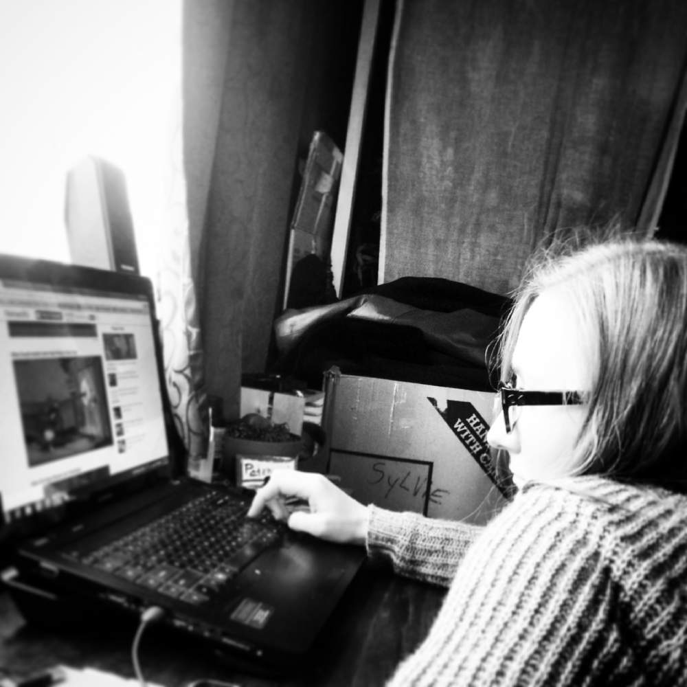

Bored at work. Bored at home. We can be bored anywhere. Humans have brief moments of contentment when we get what we want, but it doesn’t last. Unlike dogs, for example, we experience constant evaluations about anything and everything. When we buy into the content of these, we become absorbed in stories like: This is boring …, It would be better if … and It shouldn’t be like this …

Boredom is the feeling that everything is a waste of time; serenity, that nothing is. - Thomas Szasz
When we become absorbed in boredom, we fall into striving for more stimulation elsewhere. It’s advertised as being 'better than this.' Promises of the better moment in the future take us away from connecting to the real, alive and vibrant experience of now.
When we look at wanting, we experience the part of ourselves that is never content. - Jack Kornfield
This video is available in the full version of this app.